Back to builder
Verified 3D scenery
Actual AYN Thor captures. Only the exact builds that passed the recorded tests are listed. Coverage remains limited to reviewed environmental families and tested scenes. GIFs are reduced for file size and do not measure runtime frame rate.
Visual Climate → Automatic follows calendar seasons and selects season-weighted weather every 15 minutes of real time, fading over eight seconds. A repeated selection can last longer. Manual fixes the selected season and weather. Native scripted weather takes priority; cosmetic weather stays outdoors and does not change gameplay RNG.
FRLG+
FRLG-Plus-3D-Scenery-v5-2026-11-20.zip · 2D/3D, seasons and battle screenshots
Minimum sampled field / battle / active / automatic-weather / winter FPS: 59.7 / 59.8 / 59.7 / 59.7 / 59.8. Zero retained work over budget and zero matched active audio underruns.
 Botanical geometry in motion
Botanical geometry in motion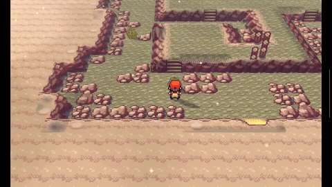
Strength movement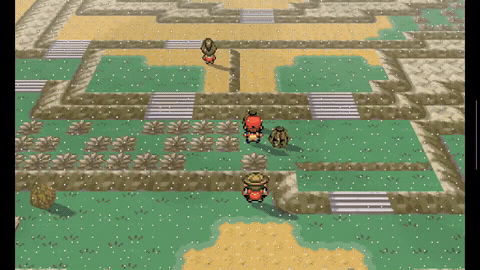
Rock Smash Cut
Cut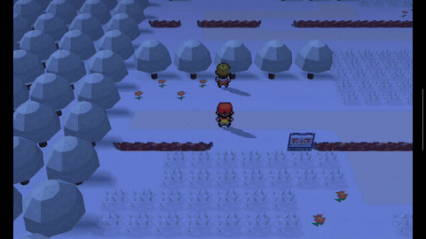
Winter ground Winter battle
Winter battle Rain
Rain Snow
Snow Fog
FogSource e83efae5ffad851b41246e88636ef9cc61e062ba; CI build.
FireRed
FireRed-3D-Scenery-v5-2026-11-20.zip · 2D/3D, seasons and battle screenshots
Minimum sampled field / battle / active / automatic-weather / winter FPS: 59.8 / 59.8 / 59.6 / 59.8 / 59.8. Zero retained work over budget and zero matched active audio underruns.
 Botanical geometry in motion
Botanical geometry in motion Strength movement
Strength movement Rock Smash
Rock Smash Cut
Cut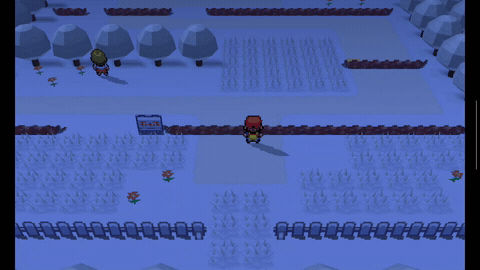
Winter ground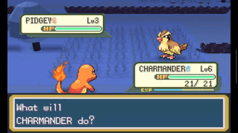
Winter battle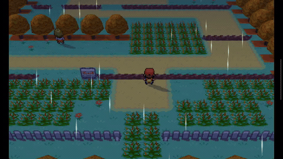
Rain Snow
Snow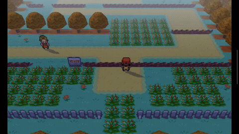
FogSource 7a97d7c79e6efeb281987bea707b4a3944d54c8f; CI build.
Classic
Classic-3D-Scenery-v5-2026-11-20.zip · 2D/3D, seasons and battle screenshots
Minimum sampled field / battle / active / automatic-weather / winter FPS: 59.8 / 59.8 / 59.8 / 59.8 / 59.8. Zero retained work over budget and zero matched active audio underruns.
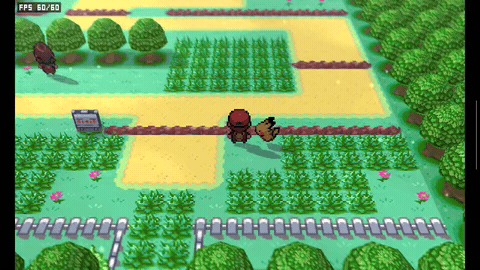
Botanical geometry in motion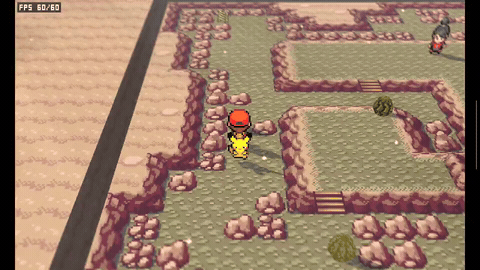
Strength movement Rock Smash
Rock Smash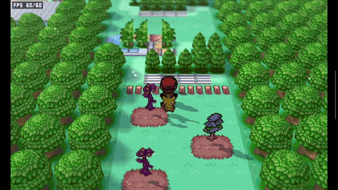
Cut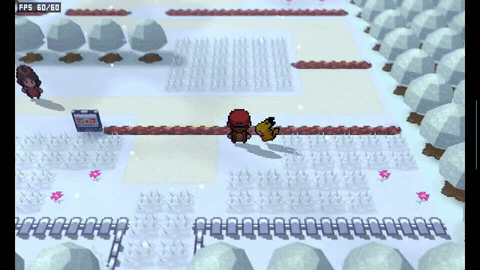
Winter ground Winter battle
Winter battle Rain
Rain Snow
Snow Fog
FogSource 35b5d965f650b7d5b3bd2a05aae1881651750584; CI build.
Exact checksums and test scope